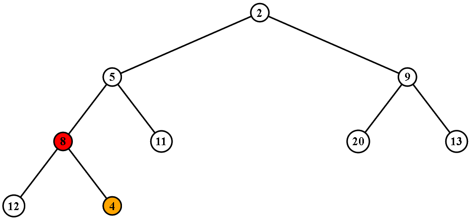

Für die mündliche Prüfung des Wahlpflichtfaches Ausgewählte Themen der Medieninformatik[1]Das Thema für MINF in diesem Semester war Visualisierung. im Sommersemester 2014 des Studienganges Bachelor Media Systems (B-MS) bestand die Option, freiwillig eine Visualisierung mit D3 in JavaScript zu erstellen, wobei ein D3 Layout gewählt werden sollte, welches nicht bereits in der Vorlesung behandelt wurde.
Inspiriert vom Anhang B - Elementare Datenstrukturen des Buches Graphentheoretische Konzepte und Algorithmen[2]ISBN 978-3-8348-0629-1
(amazon.de) von S. O. Krumpke und H. Noltemeier, in dem d-näre Heaps[3]Ein binärer Heap ist z.B. ein d-närer Heap mit d=2. D-näre Heaps sind eine Verallgemeinerung von binären Heaps für beliebiges d (degree = Grad), was je nach Anwendungsfall zu einem besseren Laufzeitverhalten führen kann. erläutert werden, entwickelte ich mittels des D3 Tree Layouts eine schrittweise Visualisierung für die grundlegenden dHeap-Operationen[4]Die grundlegenden Operationen, die im Buch beschrieben werden, sind: einen neuen Knoten einfügen, den Wert eines Knoten verringern und die Wurzel entfernen.
Darüber hinaus habe ich die Algorithmen erweitert, um die Werte von Knoten erhöhen zu können, sowie einen beliebigen Knoten, statt nur der Wurzel, entfernen zu können. Beides bei gleichbleibender logarithmischer Laufzeit..
Das Ergebnis dieser Arbeit kann online hier betrachtet werden. Der geladene Heap ist das Beispiel aus dem Buch, in dem erst eine 4 eingefügt (Bild rechts) und anschließend die 2 entfernt wird.
| Sprachen | JavaScript, JSON, SVG, HTML, CSS |
|---|---|
| Technologien | D3, JS Prototypen, Closures |
| IDE | Geany |
| Beteiligte | 1 |

{kind=link}